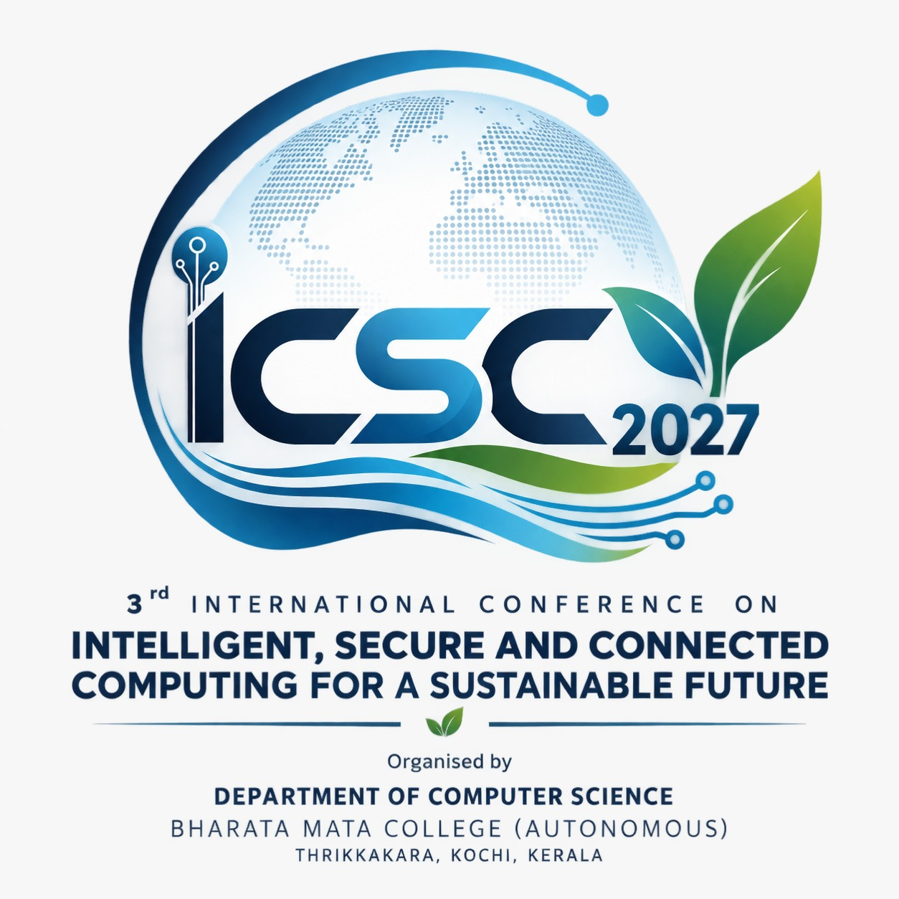
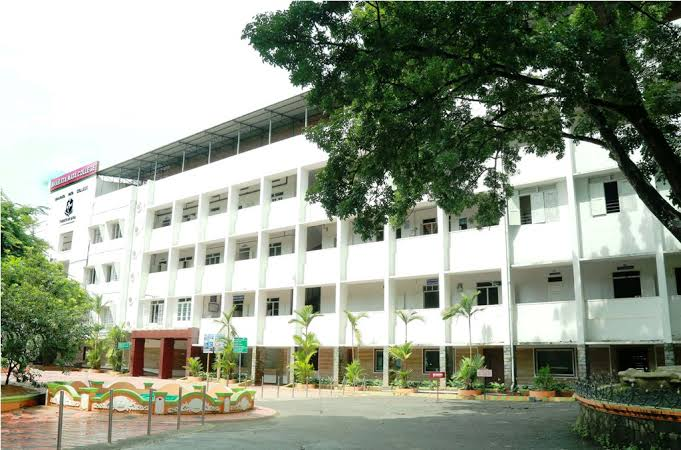

Provide an international platform for presenting and discussing recent research and innovations.
3rd International Conference · ISCCSF 2027
Intelligent, Secure & Connected Computing for a Sustainable Future
An interdisciplinary forum for research, innovation and responsible technology.
Organised by Bharata Mata College (Autonomous)

AI · DATA
SECURITY
CONNECTED SYSTEMS
ARTIFICIAL INTELLIGENCE✳CYBERSECURITY✳DATA SCIENCE✳INTERNET OF THINGS✳SUSTAINABLE COMPUTING✳ARTIFICIAL INTELLIGENCE✳CYBERSECURITY✳DATA SCIENCE✳INTERNET OF THINGS
The conference
A meeting point for what comes next.
The Department of Computer Science (SF), Bharata Mata College (Autonomous), presents a three-day international conference exploring how intelligent, secure and connected computing can shape a sustainable future.
ISCCSF 2027 brings together academicians, researchers, industry professionals, research scholars and students to explore emerging technologies, exchange research knowledge, and discuss the opportunities and challenges shaping the future of computing.
The central theme reflects the growing convergence of Artificial Intelligence, Data Science, Cybersecurity, Networking, IoT and emerging computing technologies.
Our objectives
Ideas that move research forward.
Promote interdisciplinary research across AI, Data Science, Cybersecurity, Networking, IoT and Computing.
Facilitate interaction between academia, industry and research communities.
Expose students and young researchers to emerging technologies and contemporary research.
Encourage knowledge exchange and collaborative research.
Discuss emerging technological challenges and future directions.
Promote responsible, secure and sustainable use of emerging technologies.
Create opportunities for long-term academic and industry collaboration.
Conference tracks
Five tracks. One connected future.
Interdisciplinary research themes across intelligent systems, secure infrastructure and sustainable digital transformation.
TRACK 01
Artificial Intelligence, Data Science & Analytics
Intelligent systems and data-driven technologies.
Artificial Intelligence · Machine Learning · Deep Learning · Generative AI · Agentic AI · Large Language Models · Natural Language Processing · Computer Vision · Data Science · Big Data Analytics · Predictive Analytics · Explainable AI · Responsible AI
TRACK 02
Cybersecurity, Privacy & Networks
Innovations and challenges in secure digital infrastructure.
Cybersecurity · Network Security · Cloud Security · Cyber Threat Intelligence · Digital Forensics · Privacy · Cryptography · Zero Trust Security · AI for Cybersecurity · IoT Security · Secure Communication · Network Technologies
TRACK 03
IoT, Edge & Intelligent Connected Systems
Intelligent and connected physical-digital systems.
Internet of Things · Industrial IoT · Edge Computing · Fog Computing · Smart Cities · Smart Healthcare · Smart Agriculture · Sensor Networks · Digital Twins · Edge AI · Embedded Systems · Cyber-Physical Systems
TRACK 04
Emerging Computing & Software Technologies
Emerging paradigms and software-driven innovation.
Cloud Computing · Distributed Computing · Software Engineering · Web Technologies · Mobile Computing · Blockchain · Augmented & Virtual Reality · Quantum Computing · Human-Computer Interaction · DevOps · Green Computing · Emerging Computing Paradigms
TRACK 05
AI, Technology & Sustainable Digital Transformation
Applications and societal impact of emerging technologies.
AI for Healthcare · AI in Education · AI in Finance · AI for Social Good · Sustainable Computing · Digital Transformation · Responsible Technology · Human-AI Collaboration · Smart Systems · Sustainable Development
Conference highlights
Research meets real-world impact.
International expert engagement
Experts from academia, research institutions and industry share perspectives on emerging technologies and their applications.
Panel discussions
Interactive conversations on AI, data, cybersecurity, IoT, networking and society.
Research paper presentations
Present original research and engage with peers across different domains.
Industry–academia interaction
Explore current practices, industry needs, career opportunities and future research directions.
Student research & innovation showcase
Demonstrate innovative projects, prototypes and technology-driven solutions.
Best Paper Awards
Outstanding contributions recognized across conference tracks.
First Prize ₹5,000Second Prize ₹3,000
Join the conversation
Bring your perspective.
Share your research.
Who can participate?
Students · Research Scholars · Academicians · Researchers · Industry Professionals
Hybrid paper presentation
Authors may present accepted papers either physically at the conference venue or online.
Online participation eligibility: Online participation is permitted only for participants residing outside Ernakulam district. Participants residing within Ernakulam district are not eligible for online participation.
Conference format
Three days of shared discovery.
Expert knowledge, research dissemination and interactive discussions, 20–22 January 2027.
20 JAN21 JAN22 JAN2027
09:30 AM— 12:30 PM
Morning sessions
Learn from leaders
and experts.
- Keynote Addresses
- Expert Talks
- Invited Talks
- Panel Discussions
- Industry–Academia Interaction
Insights into emerging developments, current research challenges and future opportunities.
01:30 PM— 04:30 PM
Afternoon sessions
Present research.
Build connections.
- Research Paper Presentations
- Technical Sessions
- Track-wise Discussions
- Researcher Interaction
A space for research dissemination and exchange across conference tracks.
The programme outlines the daily session format; detailed session timings and speaker information will be announced by the organisers.
Mark your calendar
Important dates.
| Date | Event |
|---|---|
| Abstract Submission Opens | |
| Abstract Submission Deadline | |
| Abstract Acceptance Notification | |
| Full Paper Submission & Registration Opens | |
| Full Paper Submission Deadline | |
| Final Registration Deadline (without paper) | |
| ISCCSF 2027 Conference |
Registration
Make room for your next idea.
Registration fees are charged per person. The same fee applies to physical and online paper presentations.
| Participant category | Participation only Without paper | Paper presentation Per person |
|---|---|---|
| Student | ₹500 | ₹700 |
| Research Scholar | ₹500 | ₹1,000 |
| Academician / Faculty | ₹500 | ₹1,200 |
| Industry Delegate | ₹500 | ₹1,500 |
Registration conditions
- Fees are charged per person, not per paper.
- The same fee applies to physical and online paper presentations.
- Each accepted paper must have at least one registered presenting author.
- Co-authors who attend must register and pay the applicable fee; co-authors who do not attend do not need to register.
- One paper presentation is covered by the presenting author's registration. Additional papers by the same author should be addressed separately in the registration policy.
Abstract submissions
Send your abstract to

BHARATA MATA COLLEGE · KOCHI
The venue
Meet us in Kochi.
Bharata Mata College (Autonomous)
Thrikkakara, Kochi, Kerala, India
Contact the organisers
Let’s make
connections.
Questions about submissions, participation or the conference? Get in touch with the organising team.
Conference contactDr. Seenia Joseph+91 81297 76468
Conference contactMs. Aswathy V S+91 95442 99390